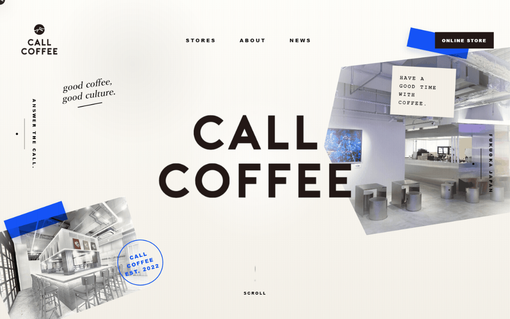
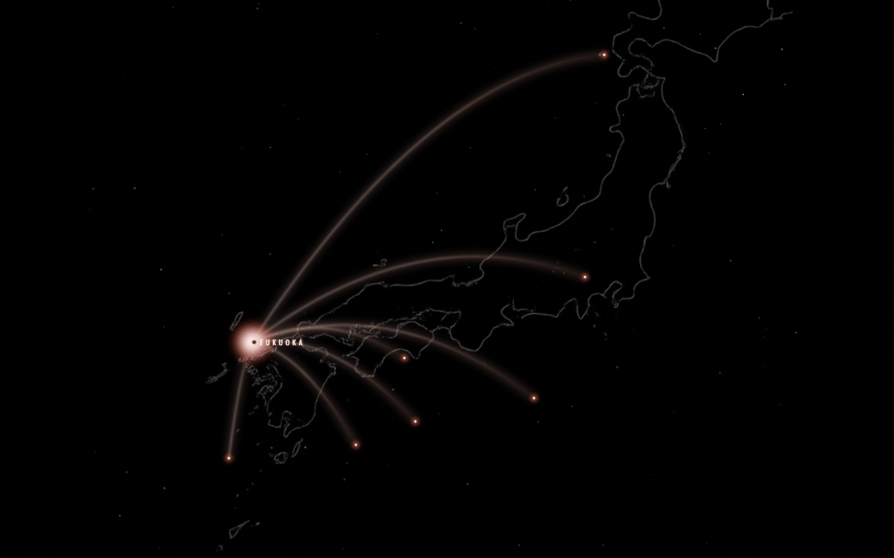
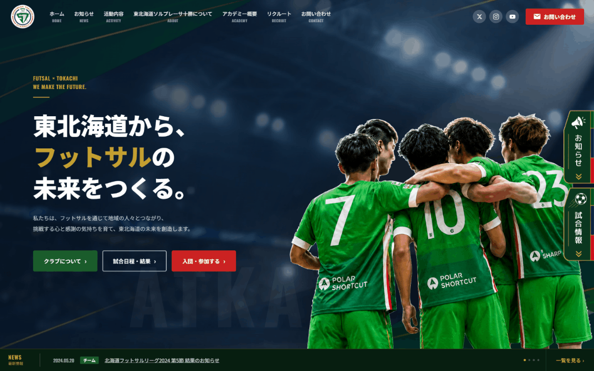

XやInstagramで集客できてるのに
受け皿のページがDM任せになっている
LP・HP制作の相談窓口
発信で人は集まる。問題は、そのあと。
集めた人を取りこぼさない"受け皿のページ"を、一緒に作ります。
買い切り4.98万〜 ／ 最短1週間 ／ 無料デモあり
XやInstagramで集客できてるのに
受け皿のページがDM任せになっている
制作会社は高すぎる
フリーランスは不安で頼めない
何をどう頼めばいいか
そもそも分からない
発信で人は集められる。問題はそのあと。
興味を持った人が"次に見る場所"が、ありますか。
無料プレゼント受取・メルマガ登録など。LINEへ流す前の"最初の1ページ"を整える。
講座・コンサル・デジタル商品の販売ページ。「なぜ必要か」から「今すぐ申込む」まで1枚で完結。
購読者・購入者向けの特典案内。信頼の積み上げを、ページでも支える。
専門用語も準備も不要。「こういうことがしたい」で十分です。
あなたのサービスに合わせたサンプルページを無料で作ります。
気に入らなければキャンセルOK。納得してから進められます。
累計1,000サイト以上の制作体制で対応します



掲載許可をいただいた案件のみ表示しています
窓口担当
Tadanosuke Kobayashi ／ Divizero 代表
Web制作・SNS発信・マーケティングに携わる中で、
「良いサービスを持っているのに、見せ方で損している人が多い」
と感じてこの窓口を始めました。
私が窓口となり、信頼できる制作体制と連携して、
相談から完成まで伴走します。
専門用語なしで、気軽に話しかけてもらえれば嬉しいです。
私が窓口となり、信頼できる制作チームと連携して進めます。 累計1,000サイト以上の制作体制で、相談から完成まで伴走します。
はい、完全無料です。あなたのサービスに合わせたサンプルページを 実際に作ってから確認できます。気に入らなければキャンセルも可能です。
何も準備しなくて大丈夫です。「こういうサービスをやっています」の一言から始まります。 ヒアリングしながら一緒に整理します。
LP（1ページ）49,800円〜／HP（5ページ構成）98,000円〜。 買い切りで月額費用は一切かかりません。分割払いも可能です（3回まで）。
専門知識も準備も要りません。
「こういうことがしたい」の一言から始まります。
返信は基本的に当日〜翌日以内